Aadarsh K A S
Final-year engineer operating at the intersection of Hardware, Systems Architecture, and Technical Product Management. Led user discovery across 130+ campus stakeholders, shaped B2B semiconductor marketplace roadmaps in founder-led rooms, and built and field-tested IoT hardware currently in active pilot deployment. I bridge low-level engineering constraints — from RTL and PCB design — with user-centric product execution.
“I make product decisions grounded in what's actually buildable — from sensor selection and embedded firmware to RTL and silicon constraints.”
Product Work
Problem Discovery · Systems Architecture · MVP Execution
MENTO Band
Competitive athletes lose weeks of critical training to preventable musculoskeletal injuries caused by unnoticed fatigue accumulation. Engaged a local basketball club (full 10-player roster), head coach, team physiotherapist, and medical doctors from RMC to uncover on-court operational realities: players reject restrictive body attachments, coaches demand zero session-time disruption, and physios require actionable kinetic telemetry rather than raw sensor waveforms.
Tested 3 active basketball players in live court drills and scrimmage sessions, capturing 10+ hours of continuous multimodal telemetry (ECG, EMG, IMU motion dynamics, heart rate, pressure, temperature, and SpO2) across synchronized dual ESP32 wearable nodes.
| Initial Hypothesis (From) | Product Pivot (To) | Strategic Rationale |
|---|---|---|
| Chest-only strap hardware | Modular Chest + Wrist System | Drastically reduced motion artifacts during sprint & jump drills while decoupling upper-body telemetry. |
| Direct-to-Athlete user focus | Coaches + Physios + Athletes | Athletes play; coaches manage load; physios interpret fatigue. Enabled real-time bench rotation decisions. |
| General injury prediction | Target-body kinetic analysis | Muscle fatigue is localized (e.g. calf/hamstring strain). Targeted EMG telemetry isolates micro-tears. |
| Pre-injury prevention only | Prediction + Rehabilitation Tracking | Extended user lifetime value: physios use identical telemetry to monitor recovery thresholds during return-to-play. |
Wired breadboard multi-sensor setup validating baseline analog signal fidelity for ECG/EMG acquisition.
Dual ESP32 nodes with BLE/Wi-Fi telemetry pipeline streaming packetized data to Flutter mobile app and Firebase.
Ergonomic 3D-printed modular enclosures, skin-safe elastic bands, and low-latency on-device filtering for court trials.
Working multi-node wearable prototype successfully demonstrated in live court trials with a 10-player basketball club. Pitched and recognized at premier national startup and hardware forums:
- Anna Incubator × IIT PALS Pitch Fest 2026: Shared 2nd Runner Up (featured in Dinamalar news coverage).
- IIT PALS InnoWAH! 2025–26: National Runner Up (Team Atomic Minds).
- Smart India Hackathon (SIH 2025 Hardware Edition): National Grand Finalist (Top 5 Team Nationwide at LPU, Punjab).
Inceptarc
B2B MarketplaceAt Inceptarc, I worked closely with the Founder and CXOs on weekly product strategy, conducting market and competitor benchmarking to identify customer and marketplace gaps. I drove feature pruning and MVP prioritization. We institutionalized “Product Day” every Saturday — a dedicated day with no client work, focused entirely on building and validating Inceptarc’s own products, including PCB For You and Parts For You, toward a broader electronics ecosystem for India.
View Product Day Post →BusNetX
Campus MobilitySurveyed 100+ students and 30+ faculty members to quantify campus transit bottlenecks, finding an average 25-minute wait-time uncertainty and administrative overhead from manual attendance. Architected an integrated IoT tracking ecosystem: vehicle-mounted GPS telemetry, live tracking web interface, and geofence-triggered automated attendance logging to streamline institutional transit operations.
RIT Printbot
Campus ProductCampus print shop queues cause students to lose 20–40 minutes daily during peak submission hours, validated through student surveys and college administrative interviews. Devised a low-CapEx Lean MVP strategy: rather than building expensive custom printing kiosks, developed a retrofit hardware attachment module for existing campus printers, enabling automated on-demand cloud printing with minimal deployment cost. Stage 1 MVP built.
MicroHeal
MedTech · AIoTContinuous gastrointestinal health monitoring requires passive, non-invasive telemetry with zero patient friction. Built the core hardware and embedded firmware for a smart diagnostic toilet fixture that captures optical imagery and acoustic signatures during bowel movements, streaming telemetry to Microsoft Azure for cloud AI diagnostics. Designed the custom multi-layer PCB in Altium and ESP32 firmware in Embedded C, optimizing power, component footprint, and real-time edge acquisition for resource-constrained hardware. Tested and currently in active clinical pilot deployment.
Projects
VLSI · RTL · ASIC · Architecture
Tiny Tapeout SKY 26d — Custom Silicon Macro
Design Phase ActiveDesigning a custom digital silicon macro for fabrication on physical silicon using the SkyWater 130nm open-source PDK through the Tiny Tapeout SKY 26d shuttle. Executing the complete open-source ASIC flow — from Verilog RTL architecture and functional verification to logic synthesis (Yosys), floorplanning, placement, clock tree synthesis, routing (OpenROAD), DRC/LVS physical verification, and final GDSII generation.
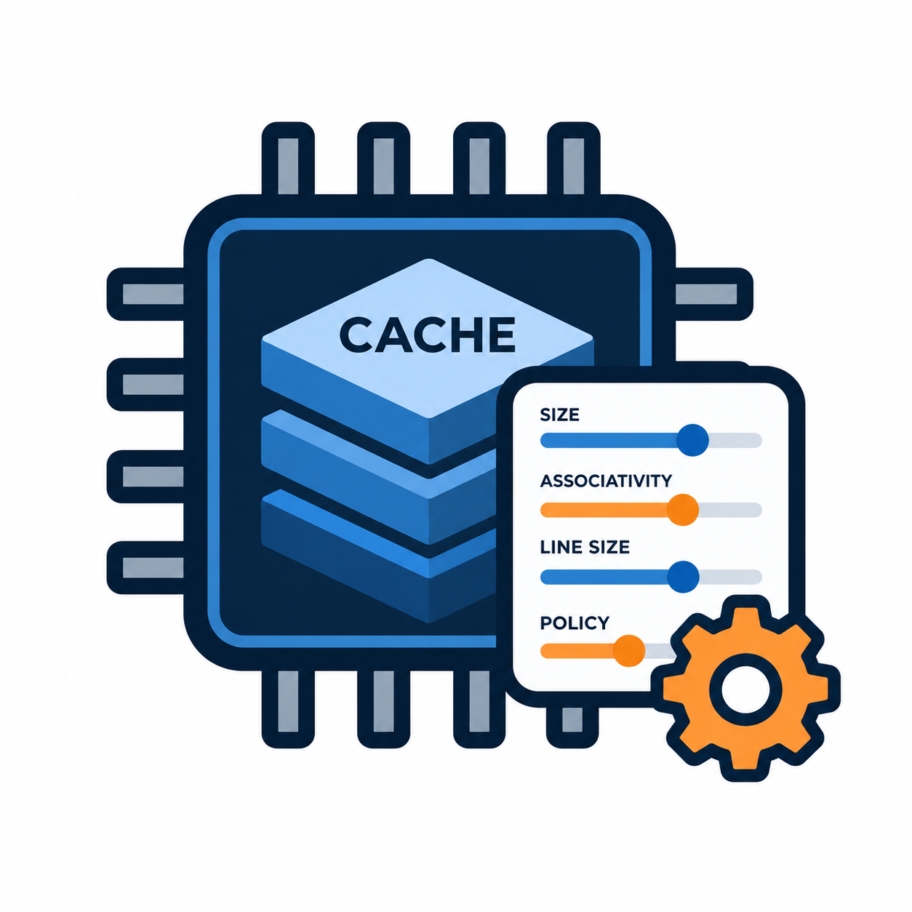
Parameterized Cache Memory Subsystem
A synthesizable, parameterized cache memory subsystem designed for scalable hardware integration. Features configurable cache capacity, line size, banking, and controller logic without rewriting core architecture. Verified with self-checking testbenches; next phase covers logic synthesis, timing closure, and area/power characterization.
View on GitHub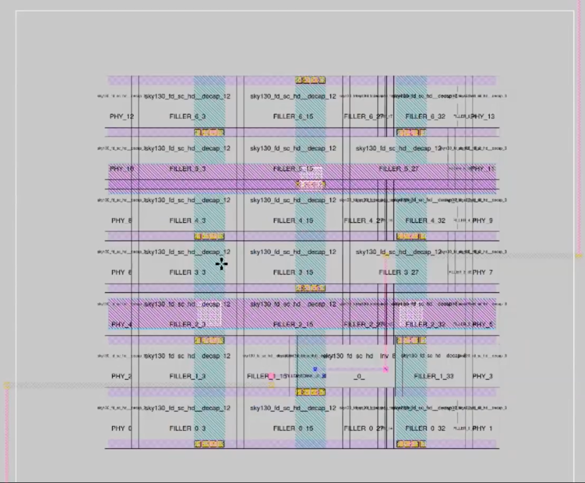
Custom NOT Gate Macro
Implemented a custom NOT gate macro using the SkyWater 130nm CMOS process. The design was constrained to an absolute die area of 30×30 microns with a deterministic pin-ordering (West-In, East-Out) to facilitate future hierarchical integration. The flow was executed via OpenLane 2, utilizing Yosys for logic mapping and OpenROAD for detailed routing, resulting in a DRC-clean GDSII layout.
5-Stage Pipelined RISC-V Processor (RV32I)
Architected and implemented a 32-bit RISC-V CPU core supporting the RV32I base instruction set in Verilog HDL. Designed a classic 5-stage execution pipeline (Instruction Fetch, Instruction Decode, Execute, Memory Access, and Write Back) integrated with a dedicated Forwarding Unit to eliminate RAW data hazards and a Hazard Detection Unit to insert pipeline stalls during load-use and control hazards.
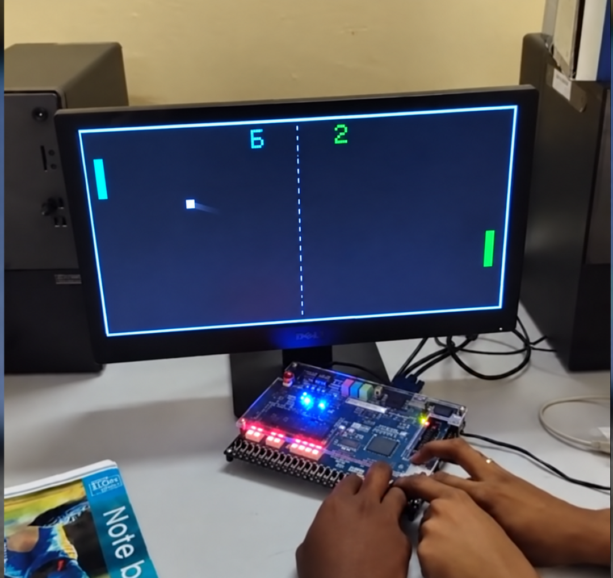
VGA Pong on FPGA
Designed and implemented the classic Pong game using hardware description language on an Altera DE2 (Cyclone II EP2C35) FPGA. Generated standard 640×480 @ 60Hz VGA timing signals, rendering sprites and paddle motion directly through RTL hardware state machines with sub-millisecond input responsiveness.
View on GitHub View on LinkedInHardware & PCB Design
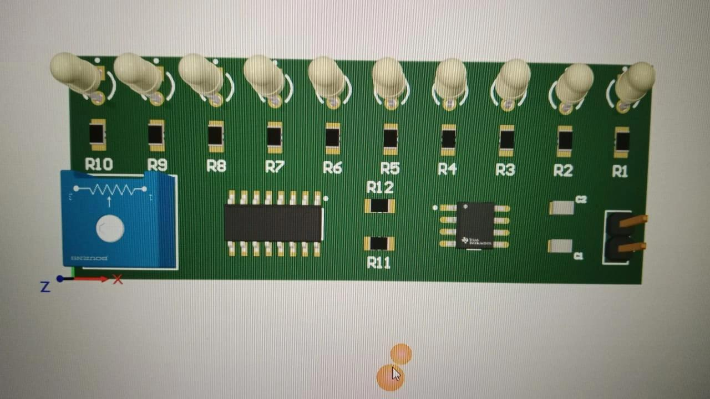
LED Sequence PCB Design
Designed a compact PCB for an LED indicator using Altium Designer, optimizing routing traces and component footprint for space-constrained embedded system integration.
Embedded Systems & IoT
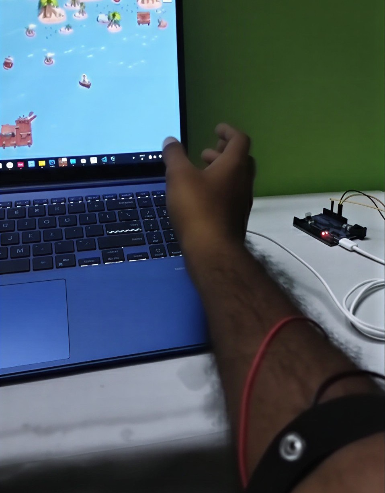
Muscle-Sync
Built an Electromyography (EMG) sensor-based control system with real-time signal processing. Translates muscle contractions into precise game inputs for immersive hands-free interaction. Signal filtering and classification done on ESP32 with sub-10ms latency.
View on GitHub
PiStream
Designed a Raspberry Pi-based smart surveillance platform combining real-time HD video streaming, audio spectrum analysis, and Firebase cloud backend. Fully controlled via a Flutter mobile app with push notifications and motion detection alerts.
View on LinkedInInternships
- Worked on RTL design and verification of digital circuits in a semiconductor environment.
- Gained hands-on exposure to industry-grade EDA tools and VLSI design flows.
- Collaborated with experienced engineers on silicon-level design tasks.
- Applied knowledge of Verilog/SystemVerilog in a professional setting.
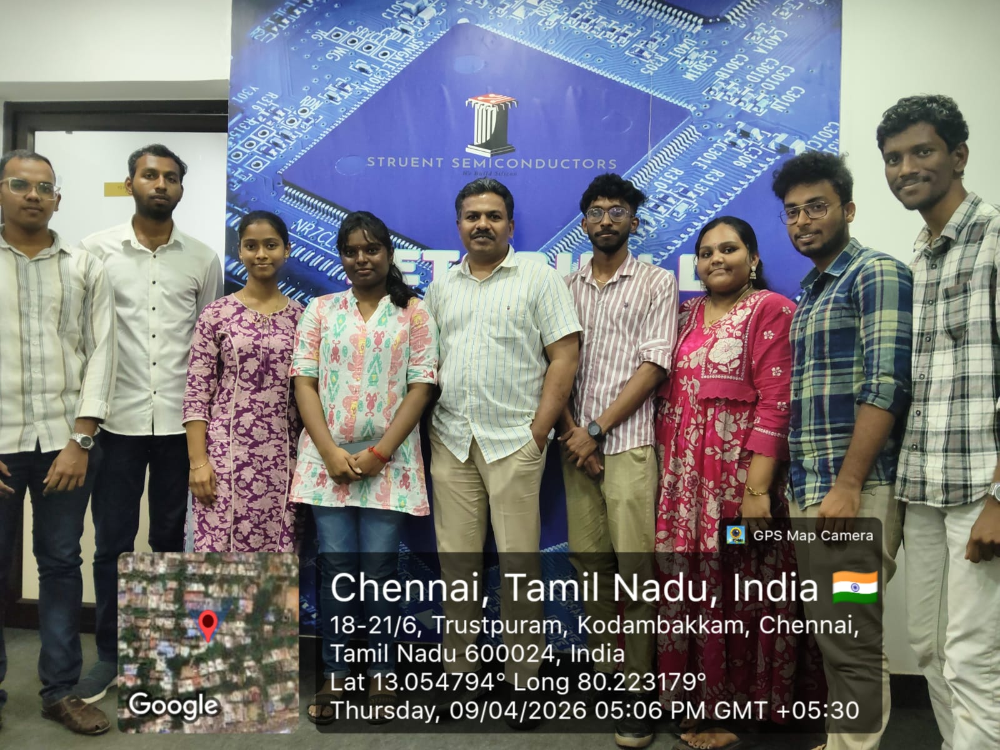
- Contributed to electronics integration of defense-grade UAV platforms, including wiring harnesses, ESC configurations, and onboard sensor mounting.
- Performed sensor calibration for IMU, GPS, and barometric pressure sensors to ensure flight accuracy and reliability.
- Supported field testing and flight stability validation of UAV prototypes under various load and environmental conditions.
- Assisted in mission readiness assessments and pre-flight checklists for defense UAV deployment trials.

- Designed multi-layer PCBs in Altium Designer, optimizing power, area, and component selection for resource-constrained healthcare IoT applications.
- Developed ESP32 embedded firmware in Embedded C for real-time multi-sensor data acquisition, processing, and wireless connectivity.
- Implemented Wi-Fi/BLE communication for reliable sensor-to-cloud data transmission and IoT integration.
- Translated product requirements into hardware, firmware, and system-level specifications, balancing technical constraints with MVP priorities.
- Collaborated across hardware, firmware, cloud, and product teams to identify trade-offs, prioritize features, and drive prototype iterations.
- Designed and validated custom PCB schematics for the wearable sensor module through iterative testing and debugging.
- Contributed to product validation and user-focused iteration, using prototype feedback and system performance to refine features and improve MVP readiness.
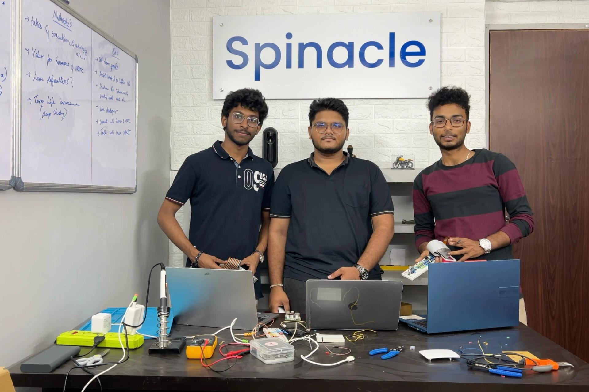
- Built an ESP32-based audio monitoring system integrated with Microsoft Azure, reducing alert latency by 10% vs. prior pipeline.
- Developed real-time signal acquisition and cloud telemetry pipeline for AIoT health monitoring use case.
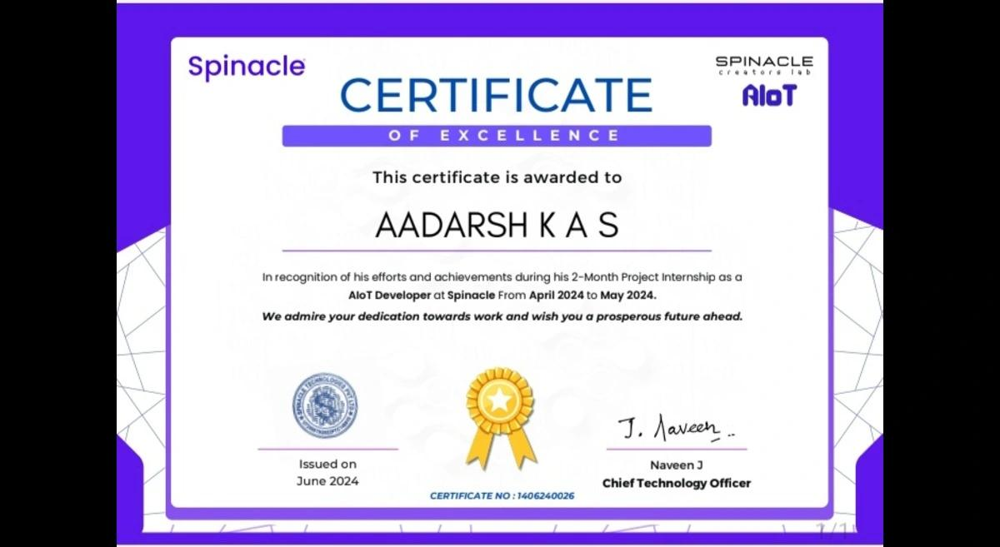
Education Qualification
Rajalakshmi Institute of Technology
CGPA: 7.83 / 10
Affiliated to Anna University, Chennai · NAAC A++ Accredited
Professional Affiliation: Student Member · IETE Students Forum (ISF · RIT Chapter)
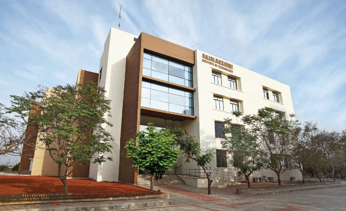
Skills & Tools
Career Highlights
Achievements & Awards
Shared the 2nd Runner Up position at the IIT PALS Pitch Fest organized by Anna Incubator, pitching MENTO Band — our wearable athletic fatigue and kinetic telemetry system — to a jury of venture leaders, clinicians, and startup incubation directors. Our team, ATOMIC MINDS, was featured in Dinamalar news for our product innovation!
Secured the Runner Up position nationwide in the prestigious IIT PALS InnoWAH! annual innovation challenge as part of Team Atomic Minds, pitching and presenting the MENTO Band athletic kinetic monitoring platform.
Recognized as a National Grand Finalist and ranked among the Top 5 teams nationwide in the prestigious Smart India Hackathon (Hardware Edition) held at Lovely Professional University (LPU), Punjab, pitching and prototyping the MENTO Band embedded wearable system under intense 36-hour jury evaluation.
Presented research at the International Conference on Power Electronics and Control Technology Systems (ICPECTS) held at Sri Sairam Engineering College.
Mentor – ROBOCHIPX 2026
Selected as a mentor at ROBOCHIPX 2026 — RIT's 24-hour intercollege innovation hackathon bridging robotics, VLSI chip design, and embedded systems. Guided student teams across HDL, embedded firmware architectures, and autonomous robotics integration tracks.
Presented the Disaster Management Drone System — an AI-powered UAV for real-time disaster response, aerial surveillance, and victim detection — to industry leaders and executives at UPS India Technology Center's Founders Day 2025. Supported by Principal Dr. Maheswari Raja and VP Dr. Pragadish N.
Awarded Certificate of Appreciation on National Science Day (28-02-2025) for outstanding participation, dedication, and valuable contributions in the Centre of Excellence for Internet of Things (IoT) toward innovative project development.
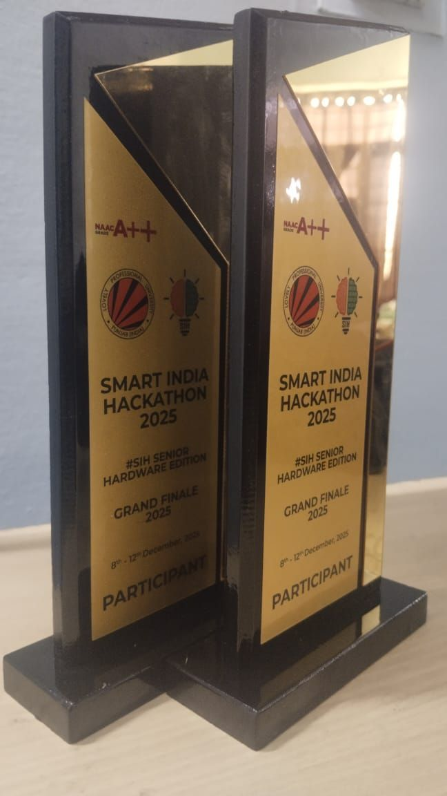
 SAIRAM.png)
.png)
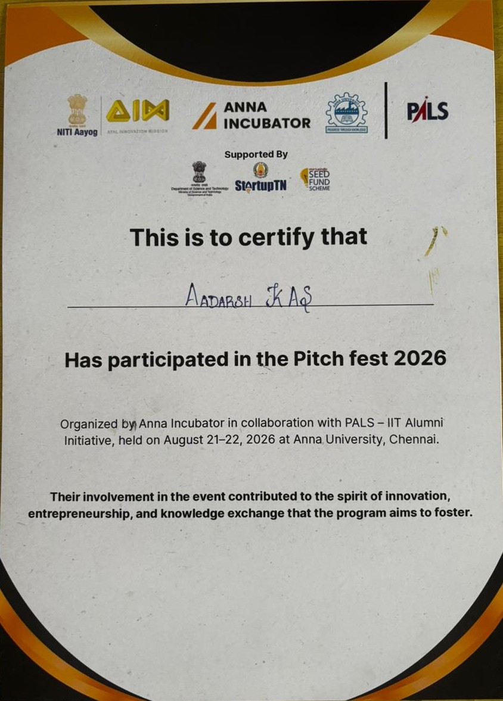
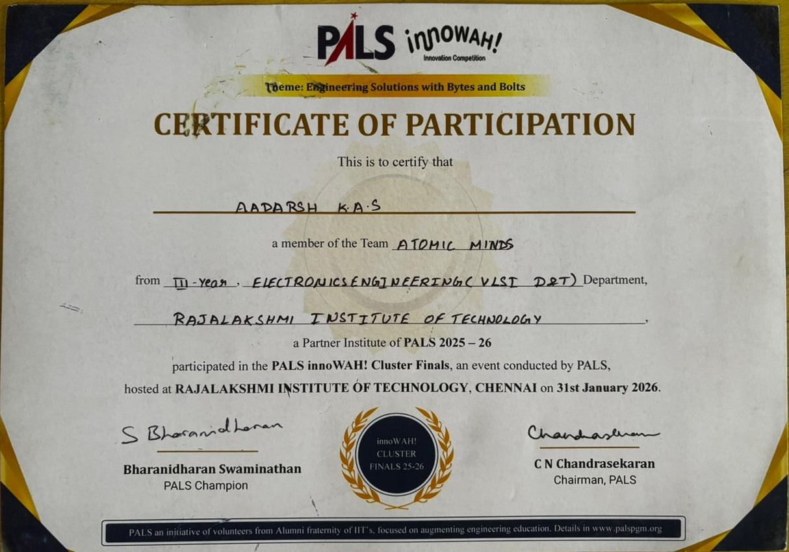
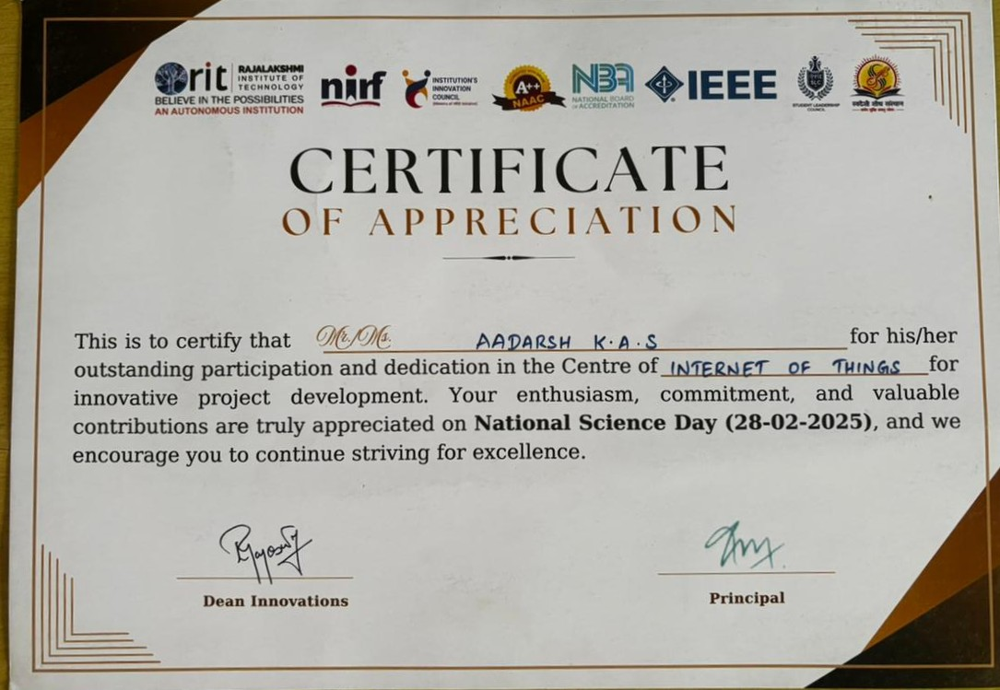
Hackathons & Competitions
Participated in a nationally competitive 24-hour hardware hackathon, conceptualising and presenting an embedded systems prototype under time pressure.
National Grand Finalist and ranked among the Top 5 teams nationwide at the prestigious Smart India Hackathon (Hardware Edition) held at Lovely Professional University (LPU), Punjab. Served as System Architect, Hardware Developer, UI/UX Designer, and Lead Product Presenter — translating an intensive real-world engineering challenge into a working embedded system and high-conviction jury pitch.
Competed in a 24-hour hackathon focused on robotics and artificial intelligence, designing and prototyping a sensor-driven automated system.
Participated in the prestigious Lam Research Talent Challenge, demonstrating technical skills in semiconductor and engineering problem-solving.
Participated in Techgium, L&T's flagship open innovation challenge for engineering students, presenting a hardware/embedded solution to a real-world problem statement.
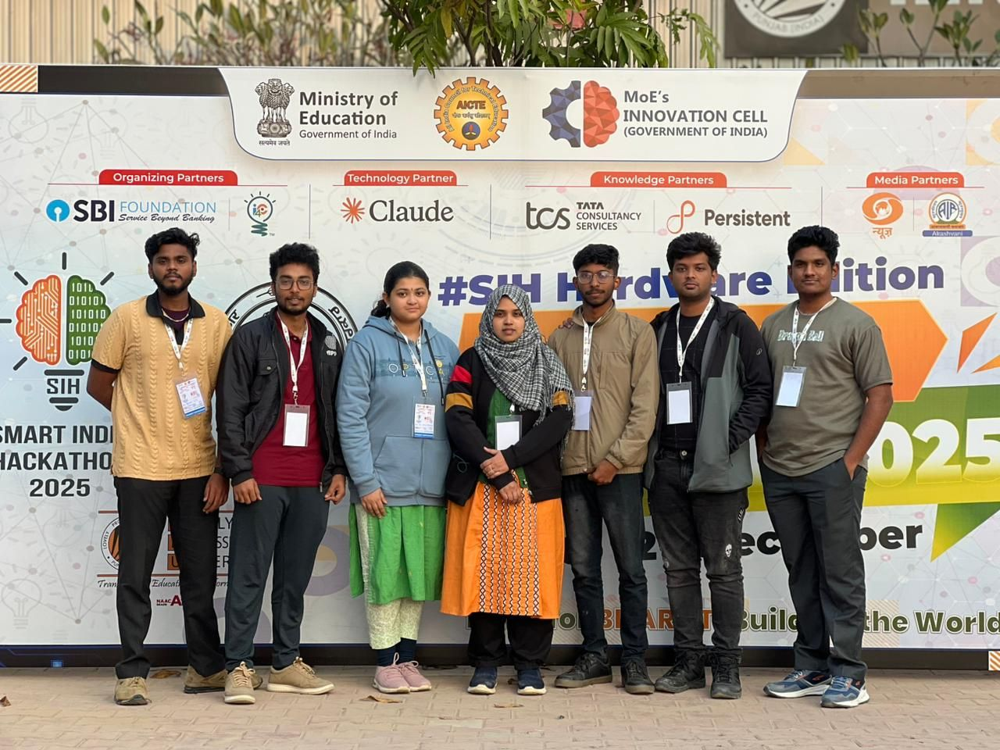
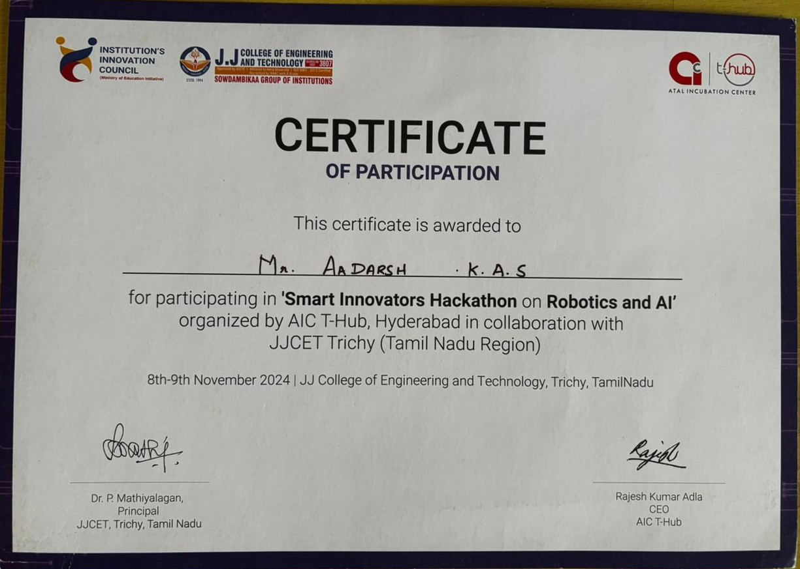
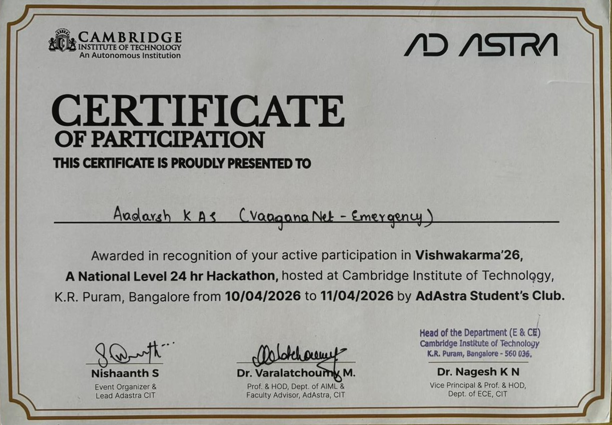
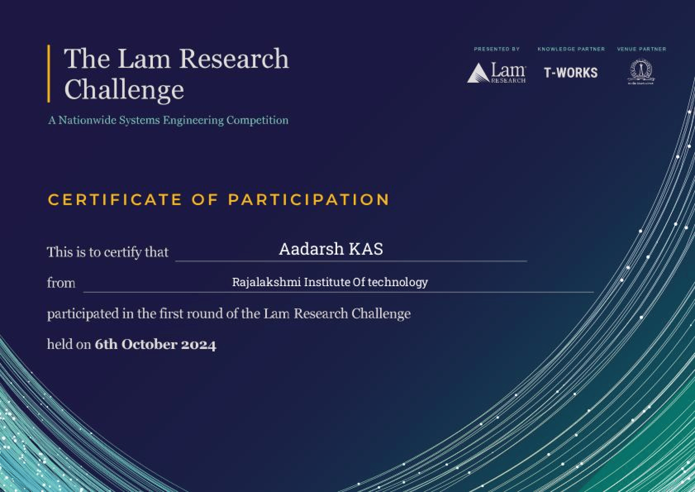
Courses & Certifications
Completed the official Linux Foundation course on RISC-V architecture, covering ISA fundamentals, instruction sets, and open-source hardware ecosystems.
Completed an intensive embedded systems fundamentals course covering microcontroller programming, peripherals, and real-time system concepts under the C2S (Chips to Startup) initiative.
Certified in AWS IoT fundamentals, covering cloud-connected device architectures, MQTT protocols, and IoT analytics pipelines.
Completed a comprehensive electronics fundamentals course covering circuit theory, components, signal analysis, and practical applications.
Completed Altium's official PCB design certification covering schematic capture, PCB layout, design rules, and manufacturing output generation.
Completed the NPTEL course on Understanding Incubation and Entrepreneurship with an Elite certification, scoring in the 97th percentile.
Completed the NPTEL Digital Circuits course covering combinational and sequential logic design, state machines, and hardware description.
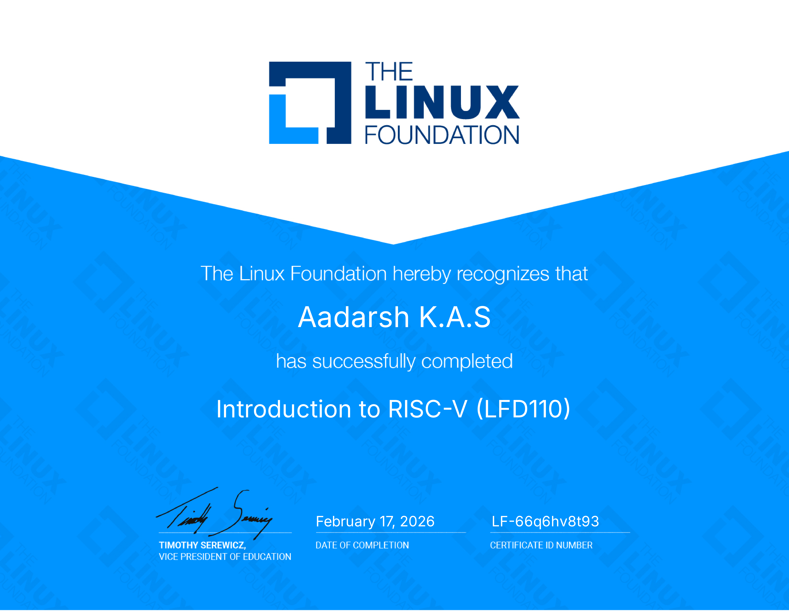
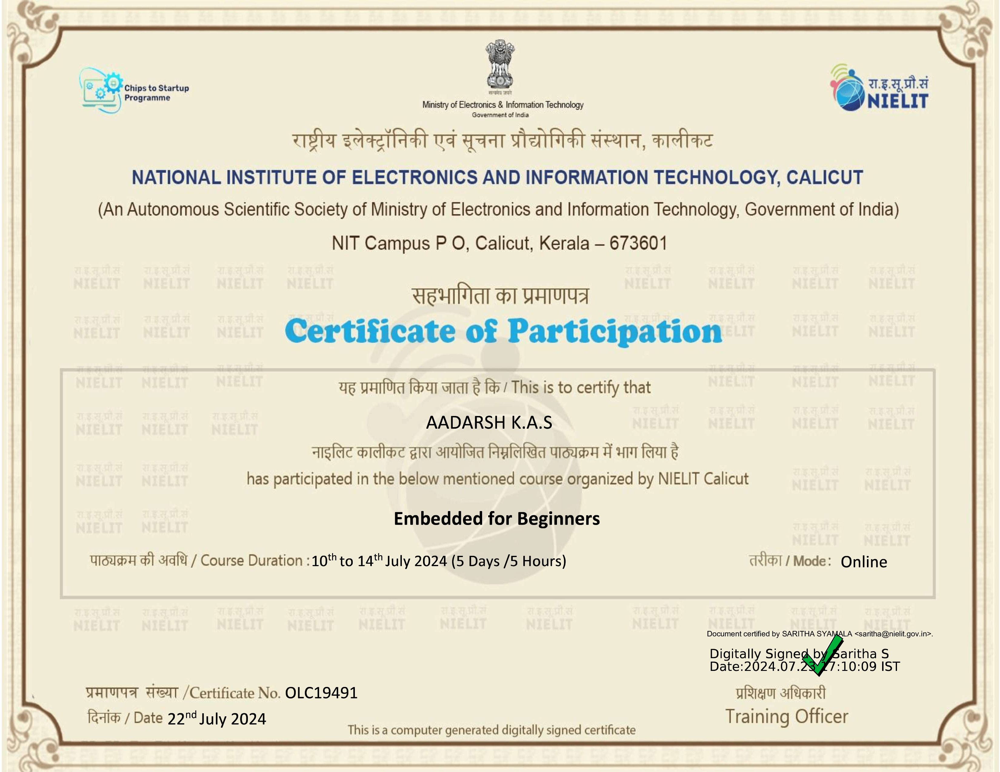


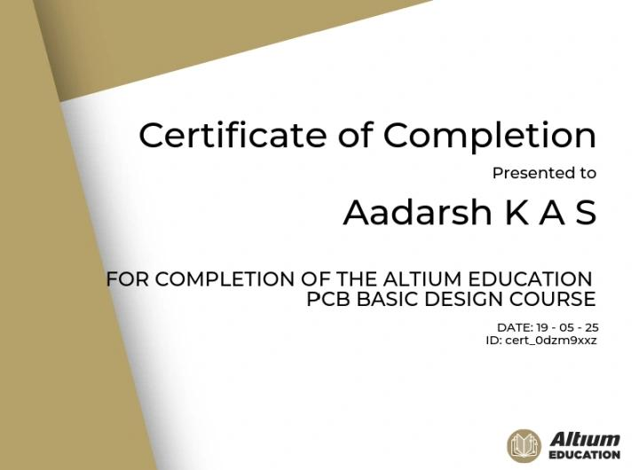
.png)

Professional Memberships & Affiliations
Active student member of the IETE Students Forum (Membership No: 346148) at Rajalakshmi Institute of Technology. Participating in technical workshops, guest lectures, symposiums, and professional networking in electronics and telecommunications engineering.
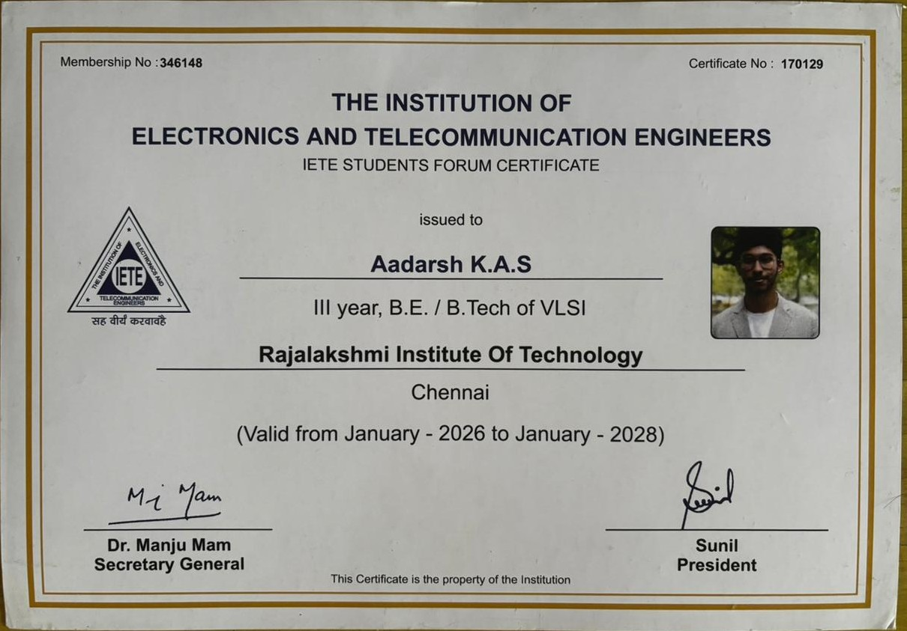
Recommendations
Endorsements · Faculty Leadership · Industry Mentors
Mentor Endorsements
Contact
Get In Touch
I'm always open to new opportunities, collaborations, and interesting conversations. Whether it's a VLSI project, embedded systems challenge, or just a hello · feel free to reach out!
- Chennai, Tamil Nadu, India
- kasaadarsh@gmail.com
- linkedin.com/in/aadarsh2812
- github.com/aadarsh2812